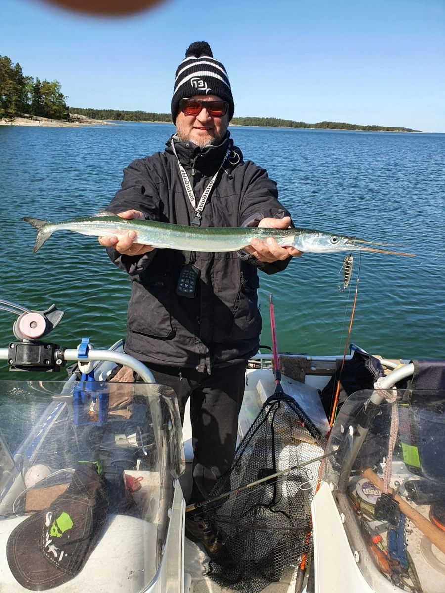
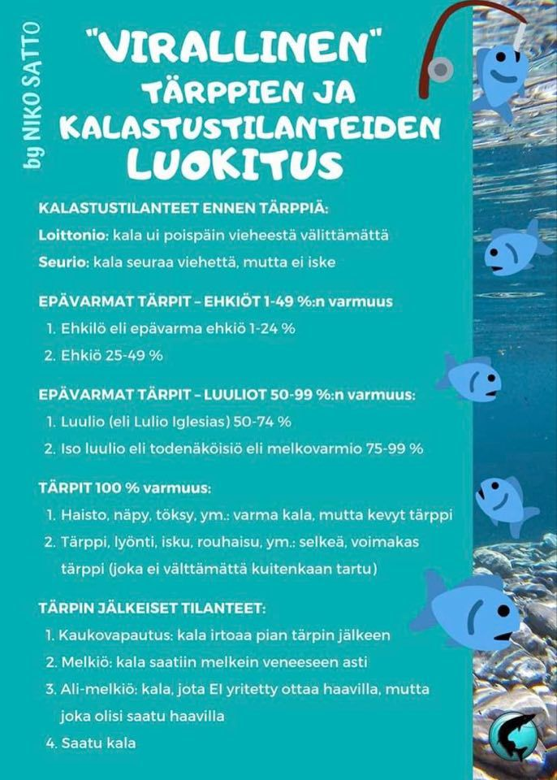
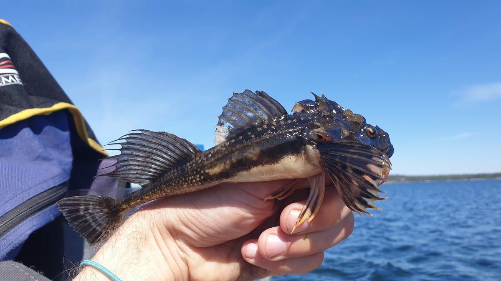
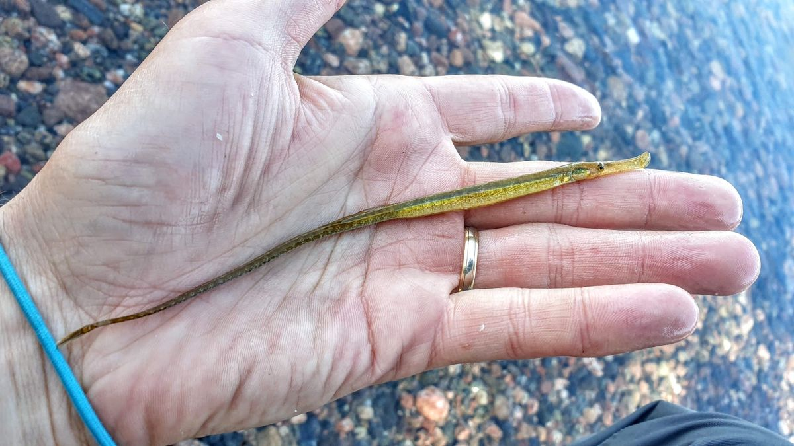
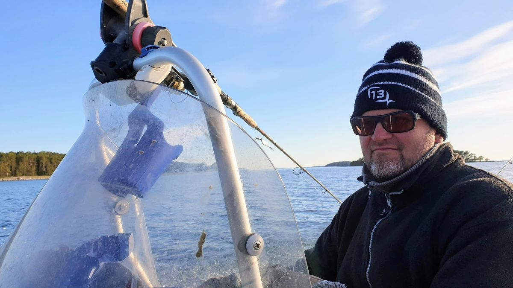
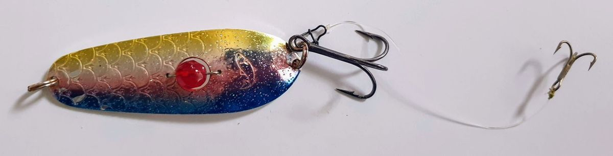
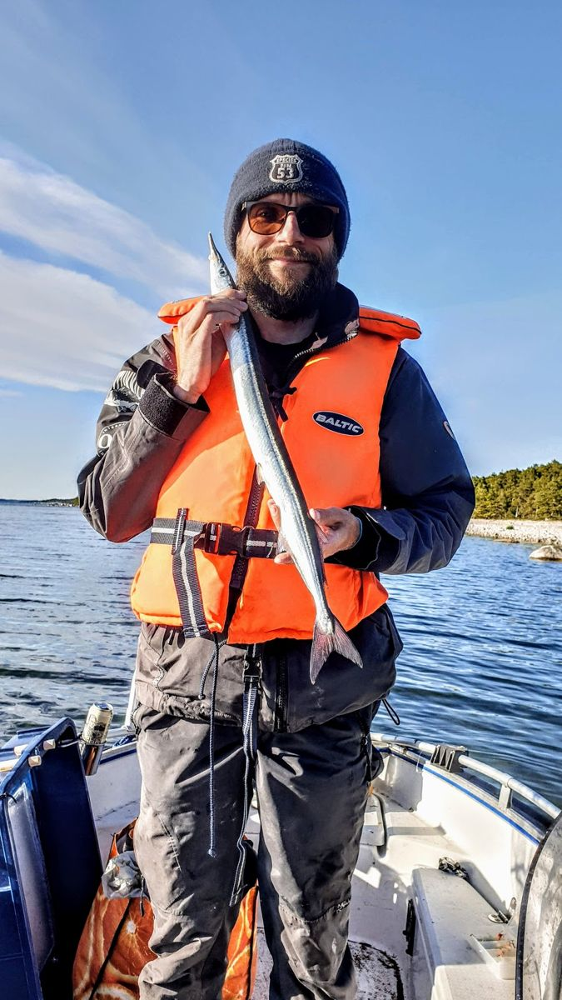
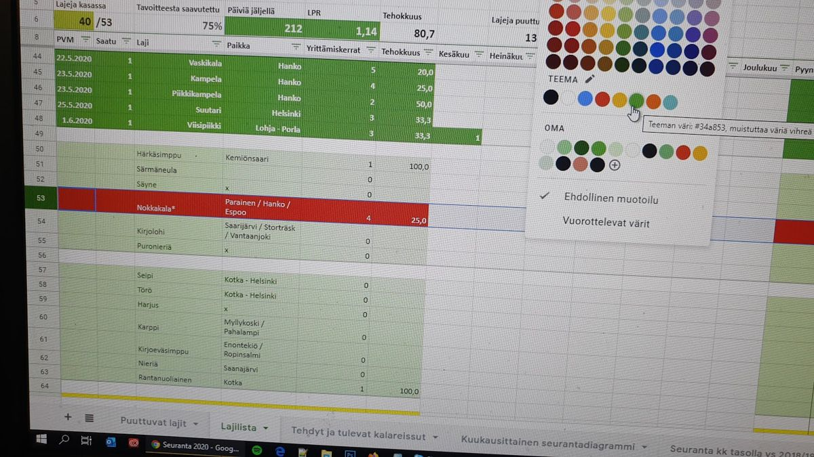

Blogitekstit · Kesäkuu 2020
Harvinaista herkkua – kaksi elämänpistettä

Olin onnellinen, kun näin Juuson ja Miikan saamat nokkakalat (Belone belone) Mikaelin järjestämältä reissulta ja toisaalta pettynyt kun en ollut itse mukana. Molemmille junioreille laji oli elämänpiste ja täydensi jo upeaa kuluvan vuoden lajilistaa.
Toivo kuitenkin eli, illan päätteeksi tuli tieto, ettei kolmatta noussut ja kippari jäi ilman. Minulla on ehkä vielä mahdollisuus päästä nokkakalajahtiin, koska kyseisen kalastajan tuntien, tätä lajia ei jätetä pyytämättä ja paikkoreissu tulisi eteen.
Kippari tarjosi kaikille meille kolmelle yhtäläiset mahdollisuudet saada nokkakala, Juuso ja Miika omat mahdollisuutensa käyttivät. Miten kävi minulle?
Kalenterimerkintä jonka 2019 tein kertoi, että tulevana viikonloppuna olisi kyseisen reissun aika, jos kipparin aikatauluun sellainen sopisi. Nopeasti aikataulut lyötiin lukkoon ja esihenkilöni suostuessa duunissa vielä plussa saldojen käyttöön, oli tiistai 2.6.2020 merkitty kalaretkipäiväksi.
Päivä alkoi kahvien juonnilla ja hetki töitä tehdessä, kunnes tuli aika hoitaa pois yksi tärkeä perheasia. Vihdoin hieman ennen yhtätoista auto starttasi kohti Kemiönsaarta.
”Arvioitu ajoaika 2 tuntia 29 minuuttia”, piirtyi puhelimen näytölle. Baana on auki, Kehä 3, Turun motari, ohi Perniön, halki Kemiön, kunnes lopulta saavun hiekkatielle, jonka varrelle jätän auton.
Matkalla katson saapuneet viestit; 11:19 Mikael Jaakkola


Kuvassa näkyy onnellinen saamamies ja kaunis pitkä hopeinen merten ohjus, päivän ensimmäinen nokkakala oli päätynyt ravintoketjussa seuraavaan asteeseen. Tämä lupaa hyvää tulevalle päivälle.
Paikallinen, asukas ajaa viereeni, vanhempi nainen tutkii katseella ”lihaksikasta", hieman hikistä vartaloani. Olen juuri ottanut takin ja farkut pois ja ”vahvat” käsivarteni sekä jalkani paljastaa kuinka auringon ruskettava vaikutus on värjännyt käteni ja jalkani hieman rusehtavaksi.
Olin viikinkipartani ja sinisen piponi kanssa varmasti uljas näky, kuin Ilomantsin Naarvan kylän metsien Hunks, kaikkien maatilan emäntien haaveunien seksisymboli.
Nainen, tai tässä tapauksessa rouva hetken kestävän läpiluotauksen jälkeen painaa V70 Volvonsa kaasupoljinta ja ajaa pois kadoten edessä siintävän mäen alle.
Olinko saanut hyväksynnän, uskallanko jättää auton tähän?
Laitoin Kalastus-lehden ja käyntikorttini pelkääjän penkille, nostin repun selkääni, vapalaukun, vesi-ikkunalautan ja eväskassini käsiini ja otin suunnan kohti alamäkeä.
Mielessäni jyskytty tuon Kemiönsaaren rantaseireenin katse ja ajatus siitä, että hän epäilee minun tekeväni pahoja retkelläni.
Edessäni aukesi meri, upea hiekkapohjainen lahden pohjukka, jonka perältä löytyi tutut herrat; Mikael ja Mikko. Molemmat kalastajat olivat tulleet tutuksi Turun Kalamaraton-kilpailuista.
Ensin mainittu on varmasti yksi Suomen kovimmista, tai ainakin toiseksi kovin fongari eli lajikalastaja,
jonka tiedän.
Vuoden 2018 tiukka kaksintaistelu hänen ja ystäväni Timin välillä päättyi jälkimmäisen voittoon, upeaan 52 eri kalalajiin yhden kalenterivuoden aikana. Tuo tavoite on nyt saavutettava ja painettava yli kohti uusia ennätyslukemia.
Ei kakkosenkaan lajimäärä kalpene ennätyksen rinnalla, 51 eri kalalajia koukutettuna on todella kovaa tekemistä!
Tämä retki olisi yksi kauden tärkeimmistä tavoitteeseen pääsemiseksi.


Kävellessä pienen nurmiläntin läpi näen, että Mikael on etsimässä kaloja vedestä. Nopeasti hän pyytää lainaan mukana olevaa ikkunaani, jonka antamisen jälkeen Mikko nostaa kalakamani ja eväskassini veneen kyytiin. Ei halunneet syödä piikkikampelat, vene kohti ulappaa.
Edessä aukeaa meri, lukuisat kiviset ja hiekkarantaiset saaret. Tuulenvireet ovat lämmenneet taivaalta paistavan auringon johdosta ja sen hellä kosketus siivittää venhomme plaaniin. Siirtymä ei pitkään kestä ja ensimmäiset heitot tippuvat vedenalta kajastavan penkan reunaan.
Ensimmäinen seurion nokkakalasta näemme vasta toisen niemenkärjen edessä ja melkein heti perään myös toisen. Vaikka kuinka heitämme ei tärppiöitä kuulu. Tärppiö on yksi Niko Saton keksimistä kalan tärppäysyrityksistä.
Ennen ruokatauolle siirtymistä ajamme noin 500 m ulommas jossa tiputan jigini, taitaa olla kolmas pomputus kun vapa menee kaarelle. Noin kymmenestä metristä nousi härkäsimppu lajipisteeksi nro. 41.


Ruokatauolla teen kuten edellinen retkiseurue. Etsin rannasta oikean syötin ja lähden särmäneulajahtiin. Olen kuullut, että oikea syötti on sellainen mitä särmäneulat eivät voi vastustaa. Koska joku kuitenkin miettii millä sen nappasin, niin jätetään se jokaisen itsensä selvitettäväksi... Saihan Mikael Väätäinen särmäneulan kastemadollakin ;)
Lopulta löydän kohdelajin, tiputan syötin hiljalleen pystyssä uivaa kalaa kohti. Butum!
Heti ensihetkestä kävi selville, että nyt on syötti kohdillaan ja kala nappasi tämän syödäkseen. Sluprs, toinen kalan liike saa syötin kääntymään suussa niin, että pää on suun sisällä ja kolmannelle nielaisulla koukku katoaa syötin pyrstön mukana.


Vastaisku, tai no nosto ja kala on haavissa. Ensimmäinen elämänpiste tältä reissulta oli päätynyt listalle. (X)-merkki lajilistalle.
Hauska tapahtuma tulee veneelle kahlatessa, katson pohjaa ja huomaan kuinka tuulenkala lepää pohjassa rakkoleväpuskan päällä. Tiputan syöttini kalaa kohti, ei reagointia. Ei pienintäkään, eväkään ei liikahda, kiduskannet eivät liiku. Totean kalan kuolleen ja nappaan sen haavilla. Haavissa kala virkoaa ja alkaa pomppimaan, mikähän juttu tämä oli mietittiin veneeseen noustessa Mikaelin ja Mikon kanssa.
Evästauko on ohi, on aika jatkaa nokkisjahtia. MotorGuide-keulasähkömoottorilla vene puikkelehtii rantakivien lomasta ja voimme Mikaelin ohjastaessa keskittyä Mikon kanssa heittelyyn. Yksi tärppiö tapahtuu, jossa kala käy vieheen perässä pärskäyttämässä vedet ilmaan. Muuten tyhjää.


Katsomme hieman kauempana siintävää rantaa, vaikka tuuli painaa rantaan on siinä tyynempi alue jonka päätämme tutkia. Siirtymä isolla moottorilla ei kestä kuin hetken. Kohta missä tuulen rikkoma pinta kohtaa tyynen on kalastettava tarkkaan, tokaisee takapenkiltä kippari.
Heti ensimmäinen heitto ja Mikolla on seurio, kaksi nokkakalaa ui melkein ristiin vieheen perässä. Hetkeä myöhemmin minulla on myös seurio, ei tärppiö. Joku mättää, jatkamme kuitenkin heittelyä. Olemme nyt nähneet kaloja kymmenkunta, ehkä siitä yhdennestätoista tulee tärppiö?
Hieman kuuden jälkeen olkapäätä särkee, selän lihakset ilmoittavat, että kohta riittää. Mietin jo paikkoreissua tai sitten on otettava suunta kohti Hankoa ja sen upeita hiekkarantoja.
Mikael, mitä maksaisi, jos lähdet heittämään uuden keikan? Saisin kuitenkin jonkun lähtemään mukaani kuluja jakamaan.
”Setelinipputäkyjä nenän edessä ja kato mihin nappaan ;) Kyllähän työttömän kannattaisi kaikki tarjolla olevat duunit tehdä, mutta sitten meillä on tämä työttömyyden systeemi, jonka järjestäytymistä vasta odotan.” - Mikael
Pähkäilemme hetken keskenämme mitä teemme väärin, kymmenen kalaa on seurannut vieheitämme eikä yksikään ole napannut kiinni, paitsi Mikaelin aamuinen yksilö.


Katson pakkini uumeniin ja muistan, että Sakke Yrjölä saa vaikka mitä lajeja Kuusamo uistimen valmistamalla räsäsellä, pakista löytyykin yksi Kalamaraton-palkintona saatu lusikka, jonka perään sidon lyhyellä 0,30 mm monofiilisiimatapsilla kolmihaarakoukun.
Heti ensimmäisellä heitolla tärppää ja pääsen huutamaan: KALA!
Tästä kalasta tulee melkiö, kala saa taisteltua itsensä juuri ennen venettä irti koukusta.
Suljen silmäni ja muistan Juuson kirjoittaman tekstin toukokuun yhteenvedosta;
"Jos sen yhden tärpin olisin tyrinyt niin tuskin toista mahista ois tullut. Sen verran vähän niitä löydettiin." -Juuso
Kala pomppi pinnalla, yritin kelata sitä kohti venettä. Taistelu oli käynnissä elämästä ja kuolemasta, näistä toinen kohtaa taistelijaa. Olen luvannut toimittaa kaloja Anne Jouhtiselle, joka käsittelee kalannahkoja ja tekee luista koruja.
Tästä väsytyksestä on ammennettava voimaa ja jatkettava piiskausta, kohta on varmasti illan viimeisten heittojen aika. Aika, jolloin vapa pistetään pussiin ja kestetään pettymys.
Uusi heitto ja heti ensimmäisten kelauksien jälkeen tärppää jälleen!
Nyt otan käyttöön Esko Vuoren neuvot, vapa alhaalla, estä kalaa pomppimasta. Kala käy kerran kokonaan pinnan yläpuolella näyttäytymässä.
Lopulta pienen, mutta intensiivisen pyristelyn jälkeen kala sujahtaa haavin pohjalle.
Nostan kädet ilmaan ja huudan PIIP! Mikaelin kuvaelma tilanteesta on:
Siinä oli ensin jotakuinkin, vähän kuin sarjakuvissa: "RRROOOAARRRRRRR!!!" niin, että rannan männyt taipuilivat ääniaalloista ja pipo tutisi kipparin päässä. Sitten se ponnekas PIIP-sana 😄
Vieressä Mikael naureskelee tuuletukselleni.


Kaikki kolotus, kipu ja väsymys kaikkoaa tuossa huudossa kohti pilvetöntä taivaan sineä. Istun veneen penkille ja ihailen pohjalla lepäävää kalaa. On harvinaista saada elämänpiste, kun niitä on lähes 60 kappaletta, nyt viimeisen muutaman viikon aikana listalle on tullut näitä harvinaisuuksia; seitsenruototokosta, särmäneulasta ja nyt nokkakalasta.
Elislistallani on nyt 57 lajia suusta koukutettuna Suomen vesistä.
Piiskaamme vielä vedenalaiset hyllyt uudestaan, ja uudestaan kunnes lopetamme. Valitettavasti Mikko jäi ilman saalista tältä reissulta. Pientä lohtua haavoihin tuo hänen pyytämä seitsenruototokko kotimatkalla joka on elispiste myös hänelle.
Sen pienen ohikiitävän hetken oli tähdet kohdallani, 43 lajia on täsmälleen sama lajimäärä kuin Juusolla ja Miikalla. Eroa listallamme on, että minulla on ankerias ja isosimppu mitä ei heiltä löydy, heidän listoiltansa löytyy jo toutainta, puronieriää ja seipiä.
Retken päätös ja seurueen hajaantuminen on haikea hetki, mutta ehkä myös niitä hienoimpia. Väsyneenä päivän urakasta on kiva istahtaa autoon, laittaa radio päälle ja lähteä ajamaan kotia kohti.
Petikon kohdalla Kasari-radiosta alkaa soimaan Abban - The Winner Takes It All, kappele on julkaistu heinäkuussa vuonna 1980 eli juuri sinä vuonna, kun synnyin, vain kymmenen päivää syntymäni jälkeen.


Olen voittaja. Hetken päässä on perheeni odottamassa tyttäreni, joka haluaa nähdä nokkakalan ja vaimo sekä poika, joiden viereen on hyvä nukahtaa upean päivän päätteeksi.
Seuraa ennätyksen etenemistä
Pidän kirjaa lajilistasta ja tarkemmasta retkidatasta Google -taulukossa, joka löytyy jokaisesta ennätysyrityksen postauksesta. Tästä linkistä taulukko avautuu uuteen ikkunaan.
Seurantatilanne löytyy myös blogini oikeasta yläreunasta.
Vuoden aikana ennätysyrityksessä kulkee mukaan myös tämä kalataitelija-graaffikko Sakke Yrjölän suunnittelema SPECIES FIN 53 -merkki.
Paitakulmassa painatin pipoon ja lippikseen saman merkin. Tavoitteeni on saada aikaiseksi 53 saaliskuvaa tekstin alussa tekemääni taulukkoon joissa kaikissa kuvissa näkyisi tuo kyseinen tunnus.
Paitakulma on Suomalainen perheyritys, joka haluaa panostaa laatuun ja asiakastyytyväisyyteen. Tutustu yrityksen palveluihin tästä.
2020 Juuso Triipponen Kemiönsaari Miika Kovanen Mikael Jaakkola nokkakala särmäneula